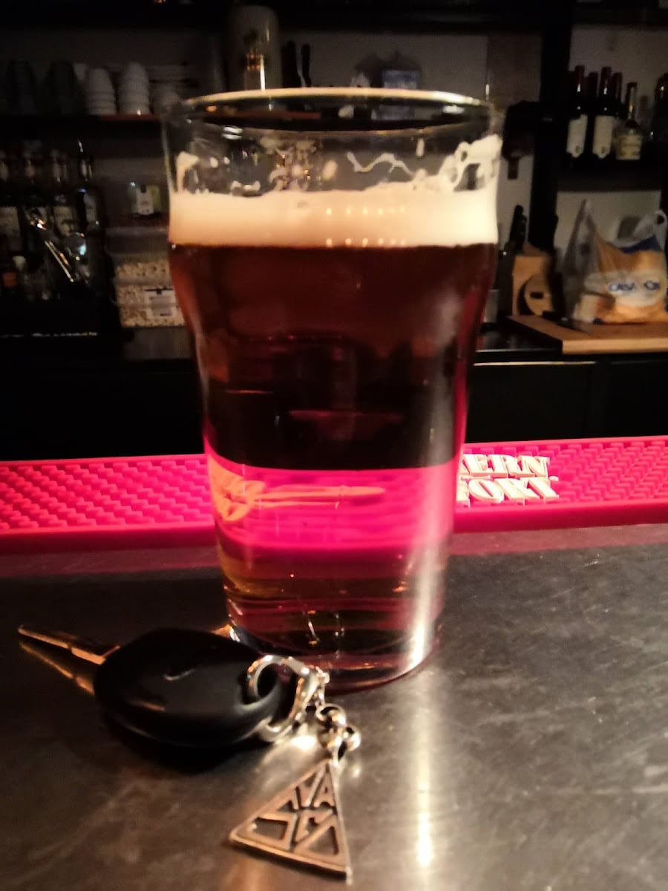
Le birre
Artigianali alla spina di varie tipologie — la Lagunitas IPA è un classico — e tante in bottiglia. Sempre spillate come si deve.
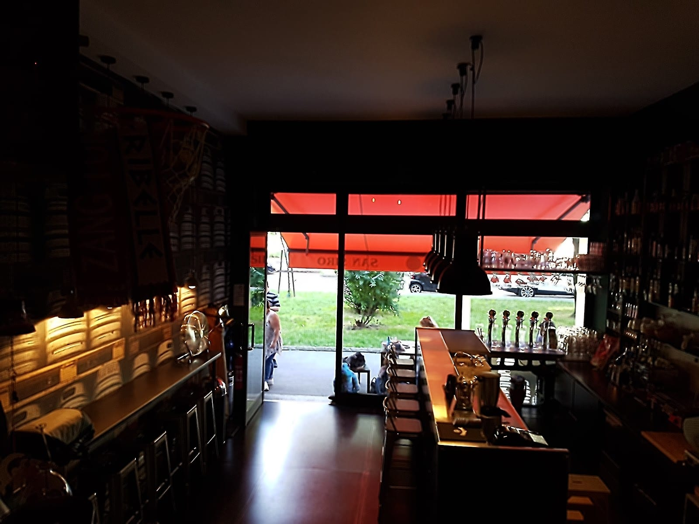
4,5 · 468 recensioni
Il pub a 300 metri da San Siro
Birre artigianali alla spina, cocktail e il cesto di popcorn con ogni birra. Il ritrovo prima e dopo la partita — aperti fino alle 2.
Il rito
A 300 metri da San Siro, All Beer è il ritrovo prima e dopo le partite e i concerti. Ci si trova, si brinda, si fa il pieno di birra buona — e si va allo stadio con lo spirito giusto.
E se non c'è partita, va bene lo stesso: la birra è buona tutti i giorni, e qui si resta fino alle 2.
Cosa bevi (e mangi)

Artigianali alla spina di varie tipologie — la Lagunitas IPA è un classico — e tante in bottiglia. Sempre spillate come si deve.
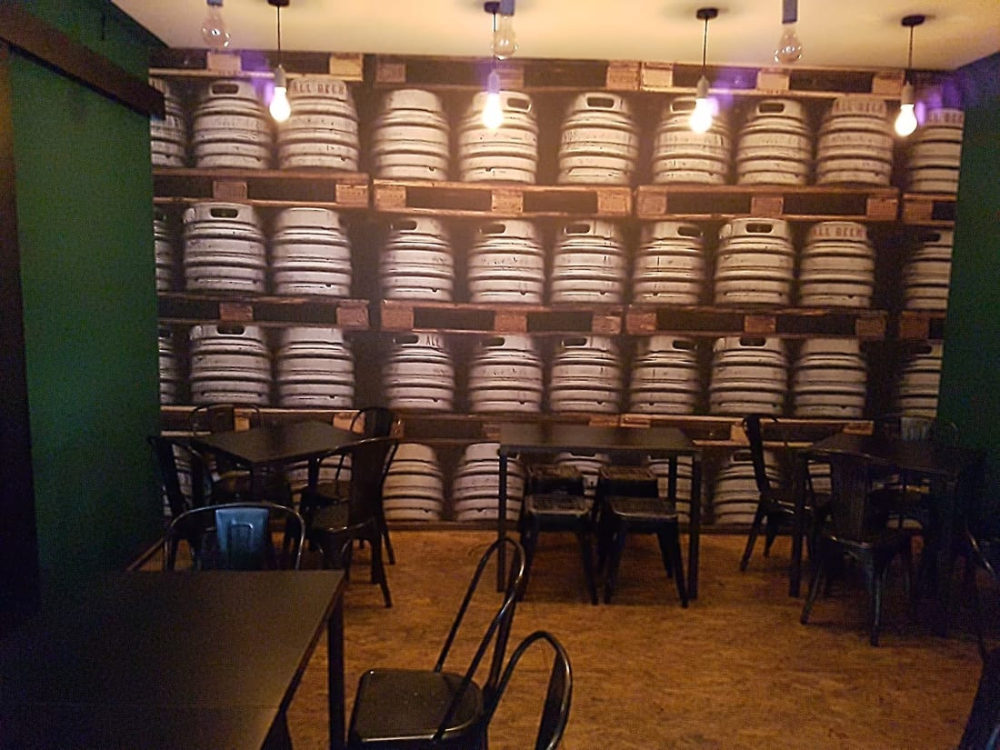
Cocktail e gin tonic fatti bene, e con ogni birra arriva il cesto di popcorn fatti al momento. Da mangiare: pinse, piadine, puccie e panini.
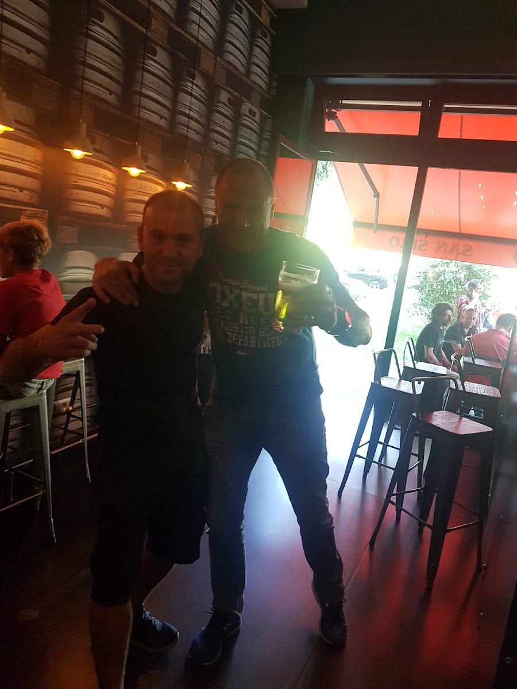
Come a casa
Il segreto di All Beer sono le persone: Elvis, il titolare, e Irisild dietro al bancone. C'è chi li chiama «the best people in the world» — e chi, dopo il primo boccale, si sente semplicemente a casa.
Personale accogliente, musica giusta e la voglia di farti stare bene: per questo qui si torna da anni.
In birreria
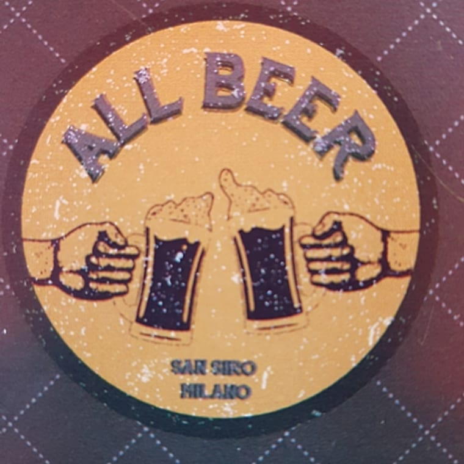
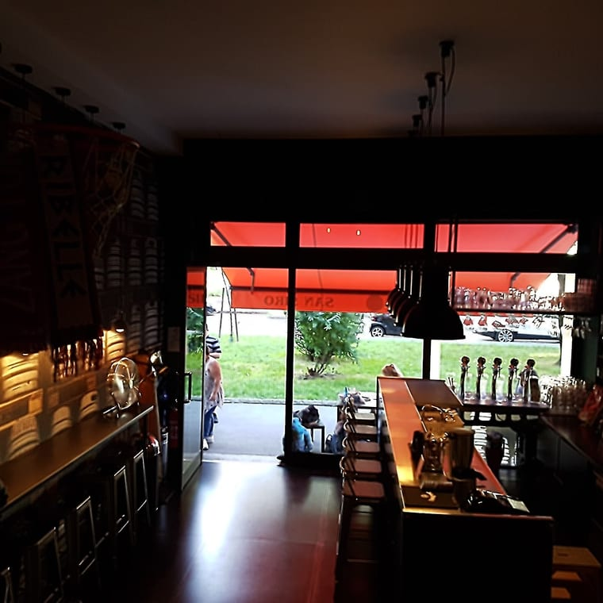
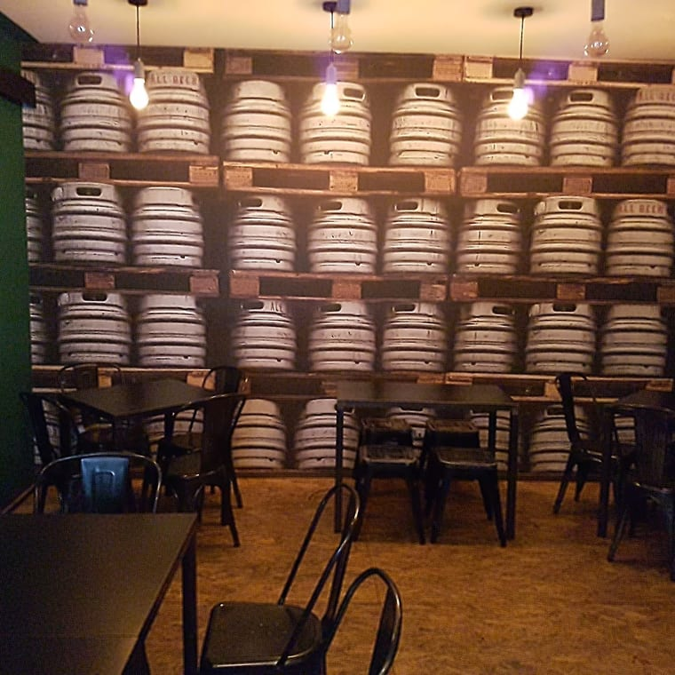
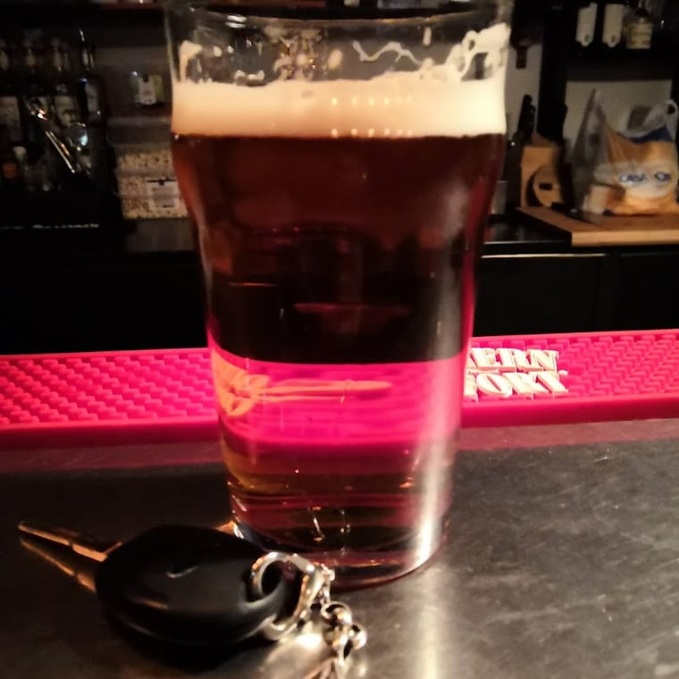
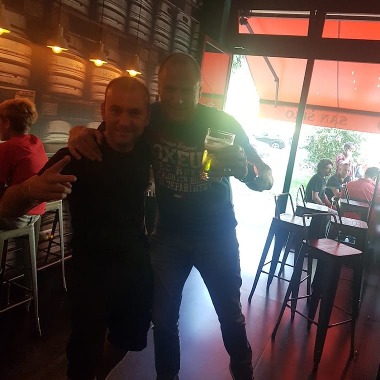
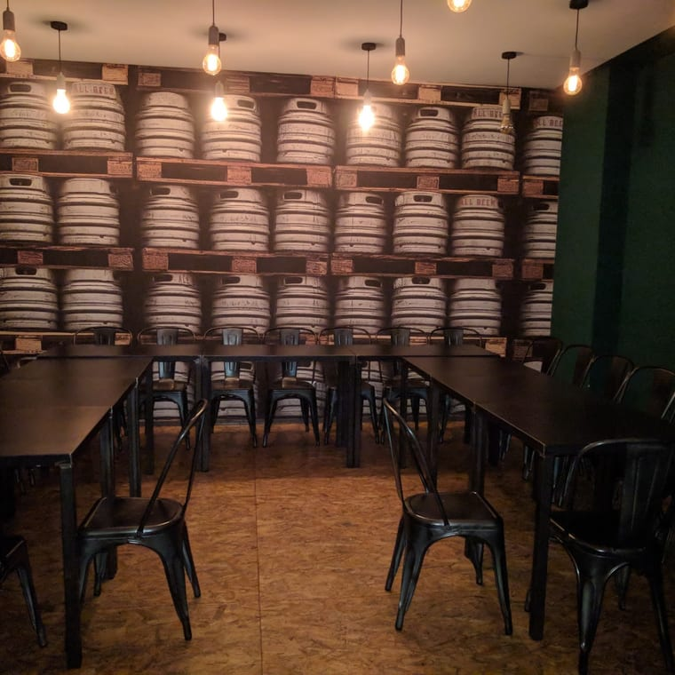
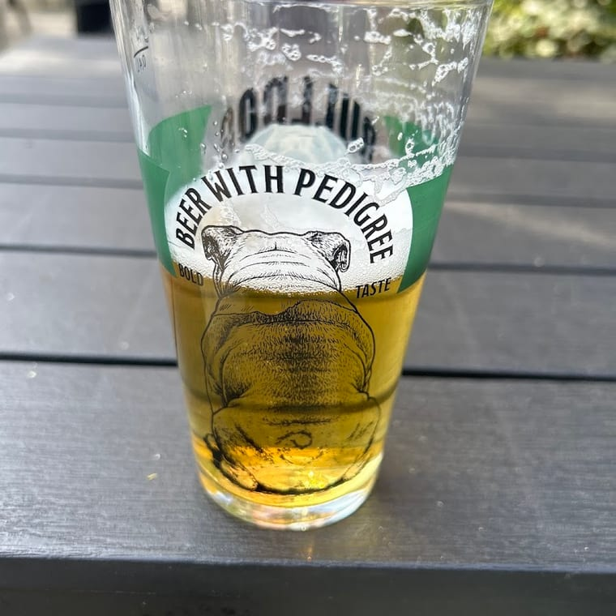
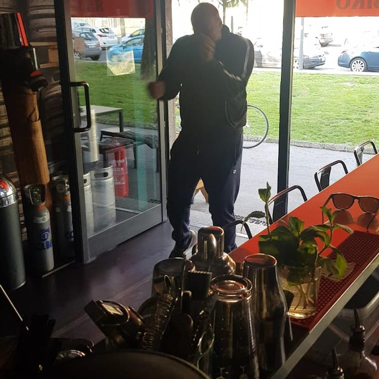
Dicono di noi
«Ottimo pub a 300 metri dallo stadio di San Siro. Perfetto per qualche birra prima o dopo le partite. Birre buone alla spina, consiglio la Lagunitas IPA. Prezzi onesti.»
Flavio M. · Google
«Per ogni birra viene portato un cesto di popcorn fatti al momento. Posto estremamente bello, personale cortese e birre ottime.»
Marco P. · Local Guide
«Non è solo il miglior pub di Milano, ma le persone dentro — Elvis e Irisild — sono le migliori del mondo. Mi sento come a casa!»
Filippo B. · Google
«Il mio ritrovo preferito prima di salire allo stadio: birra e gin tonic favolosi, e puoi anche farti una pinsa o un panino.»
Matteo · Local Guide
Dove & orari
Via Alfonso Capecelatro 75, 20148 Milano · a 300 metri dallo stadio, vicino alla fermata San Siro Stadio (M5)
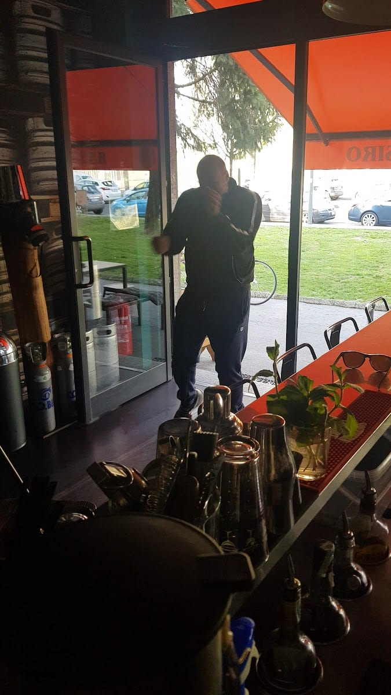
…
| Lunedì | Chiuso |
| Martedì | 17:00 – 02:00 |
| Mercoledì | 17:00 – 02:00 |
| Giovedì | 17:00 – 02:00 |
| Venerdì | 17:00 – 02:00 |
| Sabato | 17:00 – 02:00 |
| Domenica | 17:00 – 00:00 |
Domande frequenti
Circa 300 metri dallo stadio di San Siro, in Via Capecelatro 75. Il ritrovo perfetto per una birra prima o dopo partite e concerti.
Birre artigianali alla spina di varie tipologie (come la Lagunitas IPA) e in bottiglia, oltre a cocktail e gin tonic. E con ogni birra arriva un cesto di popcorn fatti al momento.
Sì: pinse, piadine, puccie e panini, in tutta freschezza. Perfetti da accompagnare a una birra.
Da martedì a sabato 17:00–02:00, la domenica 17:00–00:00. Il lunedì siamo chiusi.
In Via Alfonso Capecelatro 75 a Milano, zona San Siro, a due passi dalla fermata San Siro Stadio della M5. Chiama 02 2317 2057.